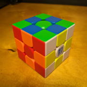
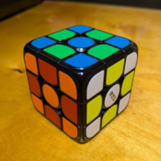

Cube Collections
As I had been collecting cubes, I discerned several threads, some things they had in common. I pursued these threads and those led me to collect several more of those categories. Some of the more salient sub-collections are presented in their own pages linked below.

10+ cubes
This was the series that inspired most of my acquisitions. I realized that history was being made in cube technology, and I wanted to experience as many of the different "cube feels" the innovative cubes presented.

10+ cubes
Despite their relative rarity and unsuitability for solving, I collected some cubes made of transparent or translucent plastic.

4 cubes
Several cube companies seemed to jump on the "maglev" bandwagon at the same time, and offered budget cubes with the technology. I got four of them, placed them in robot cases, and called them a team.

7 cubes
The MGC is a series of puzzles that are legendary in other sizes, but quite controversial in 3×3. Since the lineup was not too crowded, I decided to see for myself and attempt to collect the entire 3×3 set.

?? cubes
These are cubes that are off the beaten path with respect with the others in my collection.